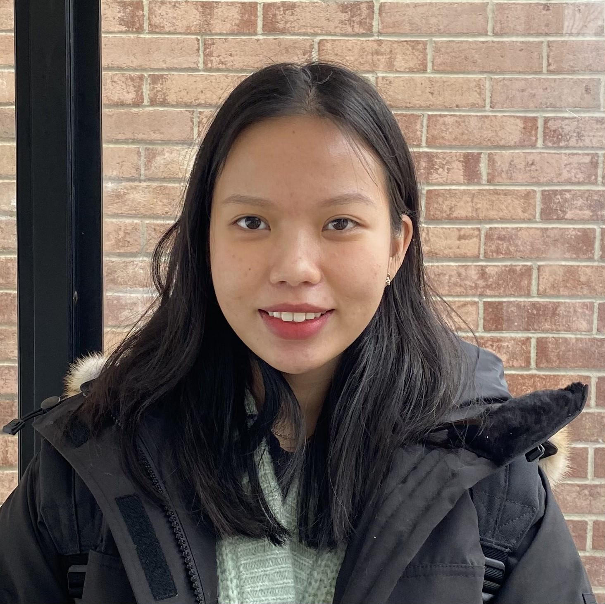

I'm Vy, a sophomore majoring in Computer Science at Cornell University.
As a computer science student, I care deeply about bringing technology closer to everyone in the world. That's also the reason why I'm interested in Human-Computer Interaction (HCI) and Software Engineering. I want to learn more about other CS fields as well, like Machine Learning and Theory. I'm also an advocate for Women in Engineering and Computer Science. I hope that more and more women would have enough courage and determination to be successful in STEM.
On campus, I participate in two research groups focusing on HCI and Computer Networks as an Undergraduate Research Assistant: SciFi Lab and Cornell Tech. Starting in the Fall 2021, I will be an academic facilitator for Engineering General Chemsistry workshops (AEW). I'm also a social media committee for Society of Women Engineers (SWE) and Association of Computer Science Undergraduates (ACSU).
Besides technology, I love listening to music, watching criminal series, and exploring various restaurants during my freetime.